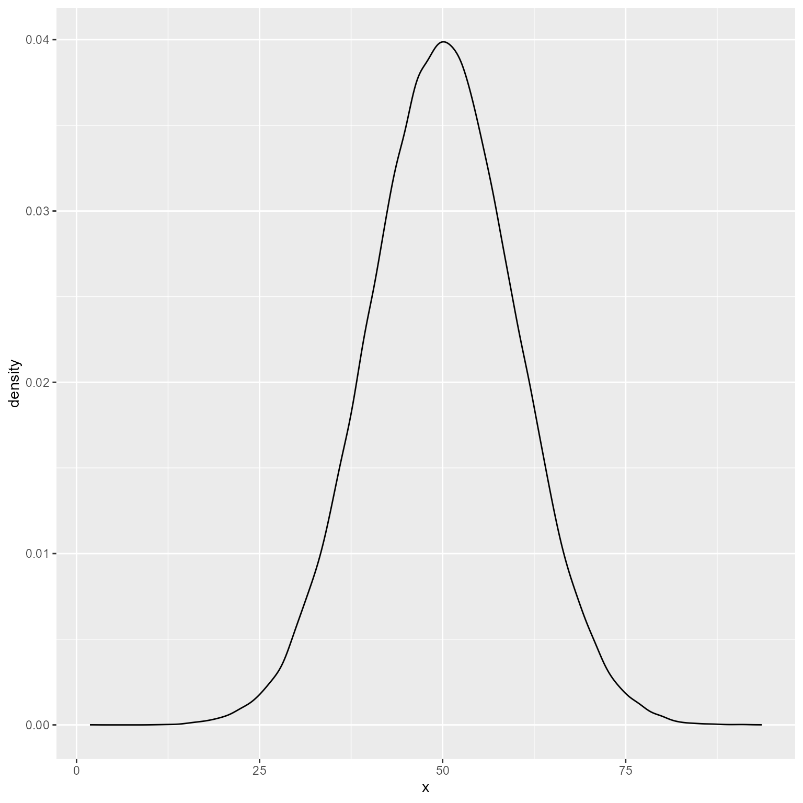
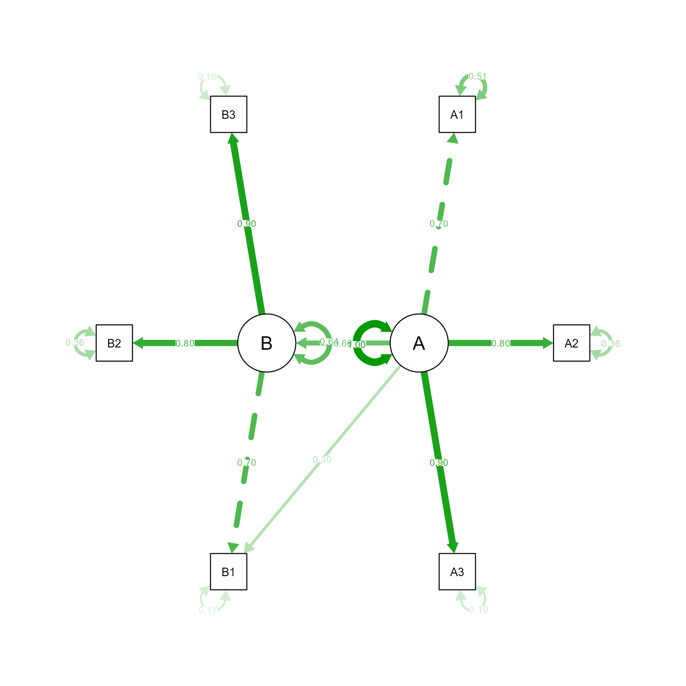

rnorm(n = 5, mean = 50, sd = 10)[1] 58.71856 49.46555 47.94691 62.39124 34.61092Once you learn how to simulate data, you will possess a data-science superpower. Generating simulated data allows you to run complicated “What-If” thought experiments, which can help identify implications of models, methods, and procedures that are otherwise difficult to discern. For example, you can ask, if my hypothesized model is correct, what sample size will I need to detect my hypothesized results? Of course, this is what power analysis is for. However, there are many models for which no analytic solution exists, and only simulated data can generate approximate answers to your questions.
Simulated data can help you understand implicit implications of statistical procedures. For example, you might have heard that ANOVA is robust to mild to moderate violations of the normality assumption. How do we know this? Scholars simulated data with normal and non-normal residuals, and found that ANOVA generally came to the correct decision except when the normality assumption was violated to extreme degrees.
Simulated data can help you understand non-obvious implications of complex decisions. For example, Schneider & Roman (2018) used simulated data to show that some well-intentioned diagnostic procedures cause diagnosis of learning disabilities to be less accurate, not more.
Simulated data have a primary limitation: they can only tell you about truths implicit in your model, method, or procedure. To observe genuinely new truths, you must observe genuinely new data.
Sometimes we need to generate simulated data one variable at a time. Let’s generate 5 points from a normal distribution with a mean of 50 and a standard deviation of 10:
rnorm(n = 5, mean = 50, sd = 10)[1] 58.71856 49.46555 47.94691 62.39124 34.61092Of course, as long as the order of your parameters is what R expects, you can write this code more succinctly like so:
rnorm(5, 50, 10)[1] 45.33785 55.12266 64.42480 55.87030 68.25846Let’s generate many cases and see if the plot looks normal. We need to put the variable in a tibble because ggplot needs its input to be in a data.frame or tibble.
tibble(x = rnorm(100000, 50, 10)) %>%
ggplot(aes(x)) +
geom_density()
That looks reasonably normal.
Suppose that we need to generate three variables x, y, and z with means of 50, 75, and 80, and standard deviations of 5, 8 and 9. x and y correlate at 0.6, x and z correlate at 0.7, and y and z correlate at 0.8. The mvtnorm package can help us.
You already know how to set up a vector with the c function. We are going to create a named vector of means. That is, we are going to associate the mean values with their respective variable names. The reason we are doing this is that when we set the mean vector with names, the data generating function will automatically name the columns.
There are, of course, several ways to give vector elements names. Pick one that you like.
# Supply names directly. Does the job with the least typing.
m <- c(x = 50, y = 75, z = 80)
# Using the names function.
m <- c(50, 75, 80)
names(m) <- c("x", "y", "z")
# Using the names function after a pipe:
m <- c(50, 75, 80) %>%
`names<-`(c("x", "y", "z"))
m x y z
50 75 80 We set up the vector of standard deviations in the standard way, though you can apply names to it if you like.
s <- c(5, 8, 9)The matrix function takes a vector, and you tell it how many rows and columns the matrix has. If you omit the number of columns, it will figure out how many columns are needed from the number of elements in your vector. In this case, there are 3 elements and 3 rows, so it divides 9 elements by 3 rows and assumes there are 3 columns.
\[\boldsymbol{R}=\left[\begin{array}{r} 1 & .6 & .7 \\ .6 & 1 & .8 \\ .7 & .8 & 1\end{array}\right]\]
# Correlation matrix
R <- matrix(c(1, .6, .7,
.6, 1, .8,
.7, .8, 1),
nrow = 3)
R [,1] [,2] [,3]
[1,] 1.0 0.6 0.7
[2,] 0.6 1.0 0.8
[3,] 0.7 0.8 1.0In a k × k symmetric matrix, the number of redundant elements is
\[\frac{k(k-1)}{2}\]
With a 3 × 3 matrix, it is easy to specify a symmetric matrix because there are only 3 redundant entries. However, imagine how tedious specifying a 20 × 20 matrix with 190 redundant entries would be. With larger matrices, consider specifying just the lower triangle of the matrix, and converting it to a full symmetric matrix using lavaan’s lower2full function. I believe this approach is not only less tedious but also less error-prone.
\[\boldsymbol{R}_{\text{Lower}}=\left[\begin{array}{r} 1 & \\ .6 & 1 \\ .7 & .8 & 1\end{array}\right]\]
The input for lavaan’s lav_matrix_lower2full function is just a vector, but I put line breaks in it to mimic the configuration of the lower triangle of the matrix.
R <- lavaan::lav_matrix_lower2full(c(1,
.6, 1,
.7, .8, 1))The covariance of x and y (σxy) is the product of the correlation of x and y (rxy) and the standard deviations of x and y.
\[\sigma_{xy}=r_{xy}\sigma_x\sigma_y\]
To convert a correlation matrix R into a covariance matrix Σ using just matrix algebra requires converting the standard deviations into a diagonal matrix D (i.e., standard deviations on the diagonal and zeroes everywhere else).
\[\boldsymbol{D}=\left[\begin{array}{l} \sigma_x&0\\0&\sigma_y \end{array}\right]\]
\[\boldsymbol{\Sigma = DRD}\]
# Using matrix operations:
# The diag function converts a vector to a diagonal matrix
D <- diag(s)
# Convert the correlation matrix to covariances
# The %*% function is the matrix multiplication operator
Sigma = D %*% R %*% DIf this conversion process seems like a lot of work, lavaan’s cor2cov function is a quicker alternative:
Sigma <- lavaan::cor2cov(R = R, sds = s)Now we are ready to generate our multivariate normal data. Let’s generate 1000 cases. The rmvnorm function outputs a matrix, so we usually need to convert it to a tibble.
d <- mvtnorm::rmvnorm(n = 1000, mean = m, sigma = Sigma) %>%
as_tibble()
d# A tibble: 1,000 × 3
x y z
<dbl> <dbl> <dbl>
1 38.0 61.5 58.8
2 49.6 80.1 80.9
3 43.8 73.3 70.2
4 55.2 66.1 79.4
5 47.9 67.2 81.3
6 49.4 84.9 76.1
7 52.0 77.6 81.6
8 46.8 82.8 90.1
9 48.1 73.9 78.8
10 40.0 58.9 53.5
# ℹ 990 more rowsLet’s plot the simulated data
ggplot(d, aes(x, y)) +
geom_point()If you want to add marginal density plots, ggExtra’s ggMarginal function looks nice to me.
# Here we save a plot as a variable p
p <- ggplot(d, aes(x, y)) +
geom_point()
# Marginal histograms will be added to our saved plot
ggExtra::ggMarginal(p, data = d, type = "histogram")If you need to simulate data based on a model, the simulateData function from lavaan is quite good. The simsem package takes this approach to the next level, with excellent functions for power analysis.
If you think about things in terms of standardized path coefficients, my own package, simstandard, may be what you are looking for. The advantage of this package is that you do not need to know what the error variances need to be to make the path coefficients standardized.
For example, in this model, we know what path coefficients we want, but we do not know what the error variances should be:

Using lavaan syntax, we can specify the model like so:
library(simstandard)
# lavaan syntax for model
m <- "
A =~ 0.7 * A1 + 0.8 * A2 + 0.9 * A3 + 0.3 * B1
B =~ 0.7 * B1 + 0.8 * B2 + 0.9 * B3
B ~ 0.6 * A
"
# Simulate data
d <- sim_standardized(m, n = 100000)
# Display First 6 rows
head(d)# A tibble: 6 × 15
A1 A2 A3 B1 B2 B3 A B e_A1 e_A2
<dbl> <dbl> <dbl> <dbl> <dbl> <dbl> <dbl> <dbl> <dbl> <dbl>
1 0.155 -0.799 0.148 -0.865 -1.45 -0.955 -0.975 -1.32 0.837 -0.0190
2 -0.233 0.419 -0.434 0.499 -0.464 0.701 -0.0118 0.589 -0.225 0.428
3 -0.981 -0.728 -0.625 -1.47 -2.66 -2.74 -0.801 -1.92 -0.420 -0.0870
4 -2.09 -2.52 -1.90 -1.66 0.00704 -1.34 -2.41 -1.01 -0.403 -0.595
5 -0.0760 0.412 0.114 0.182 -0.960 -0.698 0.429 -0.475 -0.376 0.0691
6 0.171 -1.31 -0.529 -0.838 -0.244 0.285 -1.40 -0.608 1.15 -0.192
# ℹ 5 more variables: e_A3 <dbl>, e_B1 <dbl>, e_B2 <dbl>, e_B3 <dbl>, d_B <dbl># Display complete model with variances
cat(model_complete(m))
A =~ 0.7 * A1 + 0.8 * A2 + 0.9 * A3 + 0.3 * B1
B =~ 0.7 * B1 + 0.8 * B2 + 0.9 * B3
B ~ 0.6 * A
# Variances
A1 ~~ 0.51 * A1
A2 ~~ 0.36 * A2
A3 ~~ 0.19 * A3
B1 ~~ 0.168 * B1
B2 ~~ 0.36 * B2
B3 ~~ 0.19 * B3
A ~~ 1 * A
B ~~ 0.64 * BLet’s verify that the simulated data really has the right model. First we take the model and remove all the fixed coefficients.
m_free <- fixed2free(m)
cat(m_free)B ~ A
A =~ A1 + A2 + A3 + B1
B =~ B1 + B2 + B3Now we use lavaan to evaluate the data with the m_free model. The simulated data has the latent variables in the data frame. We need to remove them before this can work:
library(lavaan)
fit <- d %>%
select(-A, -B) %>%
sem(model = m_free)
summary(fit, standardized = T)lavaan 0.6-19 ended normally after 27 iterations
Estimator ML
Optimization method NLMINB
Number of model parameters 14
Number of observations 100000
Model Test User Model:
Test statistic 13.110
Degrees of freedom 7
P-value (Chi-square) 0.069
Parameter Estimates:
Standard errors Standard
Information Expected
Information saturated (h1) model Structured
Latent Variables:
Estimate Std.Err z-value P(>|z|) Std.lv Std.all
A =~
A1 1.000 0.700 0.700
A2 1.145 0.005 229.868 0.000 0.801 0.800
A3 1.291 0.005 246.069 0.000 0.903 0.900
B1 0.427 0.004 113.474 0.000 0.299 0.298
B =~
B1 1.000 0.702 0.701
B2 1.141 0.005 238.328 0.000 0.801 0.801
B3 1.285 0.005 247.303 0.000 0.902 0.900
Regressions:
Estimate Std.Err z-value P(>|z|) Std.lv Std.all
B ~
A 0.605 0.004 141.578 0.000 0.603 0.603
Variances:
Estimate Std.Err z-value P(>|z|) Std.lv Std.all
.A1 0.509 0.003 194.880 0.000 0.509 0.510
.A2 0.360 0.002 165.697 0.000 0.360 0.359
.A3 0.190 0.002 97.808 0.000 0.190 0.189
.B1 0.169 0.001 130.844 0.000 0.169 0.168
.B2 0.359 0.002 178.355 0.000 0.359 0.359
.B3 0.190 0.002 107.926 0.000 0.190 0.189
A 0.489 0.004 120.878 0.000 1.000 1.000
.B 0.313 0.003 123.981 0.000 0.636 0.636semPlot::semPaths(fit, what = "std", layout = "circle")
That looks like the model we specified.
In generating multilevel data, we will use the techniques of generating both univariate and multivariate data.
I cannot stress this point strongly enough. Taking the time to write your equations makes subsequent steps so much easier.
Suppose we want to simulate data in which first-graders’ reading ability is predicted by their vocabulary measured at the beginning of the year and by their first grade teacher’s conscientiousness. Suppose that teacher conscientiousness is expected to help all students learn to read, but it is expected that teacher conscientiousness will be particularly important for students with low vocabulary. That is, the effect of teacher conscientiousness is expected to be stronger for students with low vocabulary compared to students with strong vocabulary. Thus, teacher conscientiousness will have an effect on vocabulary’s random slope.
So, we know that vocabulary is a level-1 variable, and teacher conscientiousness is a level-2 variable. Teacher conscientiousness is expected to have an effect on both the random intercept and vocabulary’s random slope.
Let’s write out the entire equations:
\[ \begin{align*} \textbf{Level 1:}\\[1.5ex] Reading_{ij}&=b_{0j} + b_{1j}V_{ij}+e_{ij}\\ e&\sim\mathcal{N}(0,\tau_1)\\[1.5ex] \text{Where}\\ Reading_{ij}&=\text{Reading score for student } i \text{ in class } j\\ b_{0j} &= \text{Random intercept for class } j\\ b_{1j} &= \text{Random slope for Vocabulary for class } j\\ V_{ij}&=\text{Vocabulary score for student } i \text{ in class } j\\ e_{ij}&=\text{Level-1 error for student } i \text{ in class } j\\ \tau_1 &= \text{Level-1 Error Variance}\\[2ex] \textbf{Level 2:}\\[1.5ex] b_{0j}&=b_{00} + b_{01}C_{j}+e_{0j}\\ b_{1j}&=b_{10} + b_{11}C_{j}+e_{1j}\\ \begin{bmatrix}e_{0j}\\e_{1j}\end{bmatrix}&\sim\mathcal{N}\left(\begin{bmatrix}0\\ 0 \end{bmatrix}\begin{matrix} \\ ,\end{matrix}\begin{bmatrix}\tau_{00}&\\ \tau_{10}&\tau_{11}\end{bmatrix}\right)\\[1.5ex] \text{Where}\\ b_{0j} &= \text{Random intercept for class } j\\ b_{00} &= \text{The expected intercept when } C_j \text{ is 0}\\ b_{01} &= \text{The effect of } C_j \text{ on the random intercept}\\ C_j &= \text{Teacher conscientiousness in class } j\\ e_{0j} &= \text{The random intercept's error for class } j \\ b_{1j} &= \text{Random slope for Vocabulary for class } j\\ b_{10} &= \text{The expected Vocabulary slope when } C_j \text{ is 0}\\ b_{11} &= \text{The effect of } C_j \text{ on the Vocabulary slope}\\ e_{1j} &= \text{The Vocabulary slope's error for class } j \\ \tau_{00} &= \text{The variance of } e_{0j}\\ \tau_{11} &= \text{The variance of } e_{1j}\\ \tau_{10} &= \text{The covariance of } e_{0j} \text{ and } e_{1j} \end{align*} \]
Combining the level-1 and level-2 formulas:
\[Reading_{ij}=\underbrace{b_{00} + b_{01}C_{j}+e_{0j}}_{b_{0j}} + (\underbrace{b_{10} + b_{11}C_{j}+e_{1j}}_{b_{1j}})V_{ij}+e_{ij}\]
By multiplying everything out, we can see exactly how everything needs to be calculated.
\[Reading_{ij}=b_{00} + b_{01}C_{j}+e_{0j} + b_{10}V_{ij} + b_{11}C_{j}V_{ij}+e_{1j}V_{ij}+e_{ij}\]
Now we are ready!
In this case, we have four coefficients, and it is straightforward to specify them all.
Which values should you choose? That is determined by theory. With complex models like this one, sometimes there is a bit of trial-and-error to get parameter values that produce data that are consistent with the theory you have in mind.
# Fixed coefficients
# Fixed intercept
b_00 <- 500
# Teacher conscientiousness effect on intercept
b_01 <- 20
# Fixed slope for Vocabulary
b_10 <- 30
# Teacher conscientiousness effect on Vocabulary's slope
b_11 <- -4You need to remember whether you set this number up as a variance or as a standard deviation. I am setting it up as a variance.
# Level-1 error variance
tau_1 <- 5 ^ 2\[\boldsymbol{\tau}_2=\begin{bmatrix}\tau_{00}&\\ \tau_{10}&\tau_{11}\end{bmatrix}\]
I have written out the \(\boldsymbol{\tau}_2\) matrix showing only the lower triangle of the matrix because the upper triangle is redundant. I think it is safer to write the lower triangle rather than specifying the full matrix with its duplicate covariancs.
Specifying the full matrix would look like this:
matrix(
c(tau_00, tau_10,
tau_10, tau_11),
nrow = 2)We can create the \(\boldsymbol{\tau}_2\) matrix like so:
# Variance of intercepts
tau_00 <- 25 ^ 2
# Variance of Vocabulary slope
tau_11 <- 0.4 ^ 2
# Correlation of intercepts and Vocabulary slopes
r_10 <- -.4
# Covariance of intercepts and slopes
tau_10 <- sqrt(tau_00 * tau_11) * r_10
# tau lower triangle in vector form
tau_lower_triangle <- c(tau_00,
tau_10, tau_11)
# Convert lower triangle to a full symmetric matrix
tau_2 <- lavaan::lav_matrix_lower2full(tau_lower_triangle)It is generally best to start with a small number so that you simulations will run quickly. You can increase the number of clusters later. Let’s start with 100 groups. We will use the variable k to refer to the number of clusters.
# Number of clusters
k <- 100
# Cluster ID variable
# Makes a sequence from 1 to k
cluster_id <- seq(k)Option 1 Every cluster has the same size.
# Every class has 28 students
cluster_size = 28Option 2 Cluster size is determined by a random variable.
Which random variable? It is up to you. Some common choices include the normal distribution, Poisson distribution, or the uniform distribution.
pmax function. It replaces any vector element less than the lower limit with the lower limit. For example:pmax(c(2,0,-1, 4), 1)[1] 2 1 1 4Here we generate a normal variate with a mean of 28 and a standard deviation of 2.
cluster_size <- rnorm(k, mean = 28, sd = 2) %>%
round(digits = 0) %>%
pmax(1)
d2 <- tibble(cluster_id, cluster_size)
ggplot(d2, aes(cluster_size)) +
geom_bar()
cluster_size = rpois(k, lambda = 28) %>%
pmax(1)
d2 <- tibble(cluster_id, cluster_size)
ggplot(d2, aes(cluster_size)) +
geom_bar()The binomial distribution is also a good choice for generating non-negative numbers.
sample function to have cluster sizes uniformly distributed between 2 values.cluster_size = sample(x = 25:35, size = k, replace = TRUE)
d2 <- tibble(cluster_id, cluster_size)
ggplot(d2, aes(cluster_size)) +
geom_bar() Option 3 Make your own distribution function.
prob argument in the sample function.# A tribble is a "transposed tibble" that is easy to view.
# I pasted it directly from Excel using the datapasta RStudio addin
d_probs <- tibble::tribble(
~sample_space, ~probability,
25L, 0.01,
26L, 0.02,
27L, 0.04,
28L, 0.10,
29L, 0.20,
30L, 0.30,
31L, 0.20,
32L, 0.08,
33L, 0.03,
34L, 0.01,
35L, 0.01)
cluster_size = sample(
x = d_probs$sample_space,
prob = d_probs$probability,
size = k,
replace = TRUE)
d2 <- tibble(cluster_id, cluster_size)
ggplot(d2, aes(cluster_size)) +
geom_bar()sample function to generate new data with the same proportions as the real data.# Pretend that x is a vector with real data on class sizes.
# Also pretend that we do not know how it was made.
# All we know is the data in x.
d_x <- tibble(x = round((rpois(10000, 28) - 28) * 0.3, 0) + 28) %>%
group_by(x) %>%
summarise(probability = n() / nrow(.))
# Generate new data based on same proportions
cluster_size <- sample(x = d_x$x,
size = k,
replace = TRUE,
prob = d_x$probability) %>%
as.integer()
d2 <- tibble(cluster_id, cluster_size)
ggplot(d2, aes(cluster_size)) +
geom_bar()
We will use the τ matrix to simulate u0j and u1j.
Recall that
\[\begin{bmatrix}e_{0j}\\e_{1j}\end{bmatrix}\sim\mathcal{N}\left(\begin{bmatrix}0\\ 0 \end{bmatrix}\begin{matrix} \\ ,\end{matrix}\begin{bmatrix}\tau_{00}&\\ \tau_{10}&\tau_{11}\end{bmatrix}\right)\]
Create level-2 error terms.
u <- rmvnorm(k,
mean = c(e_0j = 0, e_1j = 0),
sigma = tau_2) %>%
as_tibble()
u# A tibble: 100 × 2
e_0j e_1j
<dbl> <dbl>
1 25.0 -0.855
2 -27.3 0.539
3 0.194 0.120
4 57.3 -1.15
5 -46.0 0.0632
6 -0.0923 0.210
7 -61.5 0.264
8 -17.4 0.625
9 52.0 -0.587
10 8.15 0.0914
# ℹ 90 more rowsHow you simulate the level-2 predictors depends on theory. Personality variables like conscientiousness usually have a normal distribution. I am going to make things simple by creating a standard normal variate (mean = 0, sd = 1).
C_j = rnorm(k)The bind_cols function binds the columns of two data.frames (or tibbles).
d2 <- tibble(cluster_id = 1:k,
cluster_size = rpois(k, 28) %>% pmax(1),
C_j = rnorm(k)) %>%
bind_cols(u) %>%
mutate(b_0j = b_00 + b_01 * C_j + e_0j,
b_1j = b_10 + b_11 * C_j + e_1j)
d2# A tibble: 100 × 7
cluster_id cluster_size C_j e_0j e_1j b_0j b_1j
<int> <dbl> <dbl> <dbl> <dbl> <dbl> <dbl>
1 1 25 0.226 25.0 -0.855 530. 28.2
2 2 26 -0.831 -27.3 0.539 456. 33.9
3 3 45 -0.354 0.194 0.120 493. 31.5
4 4 21 -0.351 57.3 -1.15 550. 30.3
5 5 29 -0.301 -46.0 0.0632 448. 31.3
6 6 31 -1.32 -0.0923 0.210 474. 35.5
7 7 19 -0.760 -61.5 0.264 423. 33.3
8 8 16 1.36 -17.4 0.625 510. 25.2
9 9 33 -0.401 52.0 -0.587 544. 31.0
10 10 31 -0.237 8.15 0.0914 503. 31.0
# ℹ 90 more rowsThe uncount function makes this step easy. It duplicates a row the number of times specified in the weights variable—the cluster size in this case.
d1 <- d2 %>%
uncount(cluster_size)
d1# A tibble: 2,832 × 6
cluster_id C_j e_0j e_1j b_0j b_1j
<int> <dbl> <dbl> <dbl> <dbl> <dbl>
1 1 0.226 25.0 -0.855 530. 28.2
2 1 0.226 25.0 -0.855 530. 28.2
3 1 0.226 25.0 -0.855 530. 28.2
4 1 0.226 25.0 -0.855 530. 28.2
5 1 0.226 25.0 -0.855 530. 28.2
6 1 0.226 25.0 -0.855 530. 28.2
7 1 0.226 25.0 -0.855 530. 28.2
8 1 0.226 25.0 -0.855 530. 28.2
9 1 0.226 25.0 -0.855 530. 28.2
10 1 0.226 25.0 -0.855 530. 28.2
# ℹ 2,822 more rowsThe rnorm function needs to know how many rows there are. Because the number of rows was generated randomly, we do not usually know how many rows there will be. Fortunately, we can use the nrow function, which tells us how many rows are in a data frame. The dot in the phrase nrow(.) the data.frame that was piped into the mutate function.
d1 <- d1 %>%
mutate(V_ij = rnorm(nrow(.)),
e = rnorm(nrow(.), sd = sqrt(tau_1)))
d1# A tibble: 2,832 × 8
cluster_id C_j e_0j e_1j b_0j b_1j V_ij e
<int> <dbl> <dbl> <dbl> <dbl> <dbl> <dbl> <dbl>
1 1 0.226 25.0 -0.855 530. 28.2 -0.0953 2.06
2 1 0.226 25.0 -0.855 530. 28.2 -0.0774 4.52
3 1 0.226 25.0 -0.855 530. 28.2 -0.0243 6.34
4 1 0.226 25.0 -0.855 530. 28.2 -0.120 2.93
5 1 0.226 25.0 -0.855 530. 28.2 -0.675 4.16
6 1 0.226 25.0 -0.855 530. 28.2 0.0480 -8.11
7 1 0.226 25.0 -0.855 530. 28.2 -0.669 6.06
8 1 0.226 25.0 -0.855 530. 28.2 -1.20 12.8
9 1 0.226 25.0 -0.855 530. 28.2 -1.55 -5.43
10 1 0.226 25.0 -0.855 530. 28.2 1.26 -1.82
# ℹ 2,822 more rowsIf we have written out the level-1 equation, this step is easy.
\[Reading_{ij}=b_{0j} + b_{1j}V_{ij}+e_{ij}\]
d1 <- d1 %>%
mutate(Reading = b_0j + b_1j * V_ij + e)
d1# A tibble: 2,832 × 9
cluster_id C_j e_0j e_1j b_0j b_1j V_ij e Reading
<int> <dbl> <dbl> <dbl> <dbl> <dbl> <dbl> <dbl> <dbl>
1 1 0.226 25.0 -0.855 530. 28.2 -0.0953 2.06 529.
2 1 0.226 25.0 -0.855 530. 28.2 -0.0774 4.52 532.
3 1 0.226 25.0 -0.855 530. 28.2 -0.0243 6.34 535.
4 1 0.226 25.0 -0.855 530. 28.2 -0.120 2.93 529.
5 1 0.226 25.0 -0.855 530. 28.2 -0.675 4.16 515.
6 1 0.226 25.0 -0.855 530. 28.2 0.0480 -8.11 523.
7 1 0.226 25.0 -0.855 530. 28.2 -0.669 6.06 517.
8 1 0.226 25.0 -0.855 530. 28.2 -1.20 12.8 508.
9 1 0.226 25.0 -0.855 530. 28.2 -1.55 -5.43 480.
10 1 0.226 25.0 -0.855 530. 28.2 1.26 -1.82 563.
# ℹ 2,822 more rowsIn the context of this tutorial, it might seem like the number of steps was really, really long. It is not actually all that bad. Let’s see what things look like put together:
set.seed(9)
pacman::p_load(tidyverse, mvtnorm, lavaan, lme4)
# Number of clusters
k <- 200
# Fixed coefficients
# Fixed intercept
b_00 <- 500
# Teacher conscientiousness effect on intercept
b_01 <- 20
# Fixed slope for Vocabulary
b_10 <- 30
# Teacher conscientiousness effect on Vocabulary's slope
b_11 <- -4
# Level-1 error standard deviation
tau_1 <- 50 ^ 2
# Random variances
# Variance of intercepts
tau_00 <- 25 ^ 2
# Variance of Vocabulary slope
tau_11 <- 0.4 ^ 2
# Correlation of intercepts and Vocabulary slopes
r_10 <- -.4
# Covariance of intercepts and Vocabulary slopes
tau_10 <- sqrt(tau_00 * tau_11) * r_10
# Level-2 covariance matrix
tau_2 <- lav_matrix_lower2full(c(tau_00,
tau_10, tau_11))
# Level-2 error terms
u <- rmvnorm(k,
mean = c(e_0j = 0, e_1j = 0),
sigma = tau_2) %>%
as_tibble()
d <- tibble(cluster_id = factor(1:k),
cluster_size = rpois(k, 28) %>% pmax(1),
C_j = rnorm(k)) %>%
bind_cols(u) %>%
mutate(b_0j = b_00 + b_01 * C_j + e_0j,
b_1j = b_10 + b_11 * C_j + e_1j) %>%
uncount(cluster_size) %>%
mutate(V_ij = rnorm(nrow(.)),
e = rnorm(nrow(.), sd = sqrt(tau_1)),
Reading = b_0j + b_1j * V_ij + e,
cluster_id = fct_reorder(cluster_id, C_j))Let’s see what our simulated data look like
# Final model
fit <- lmer(Reading ~ 1 + C_j * V_ij + (1 + V_ij | cluster_id), data = d)
summary(fit)Linear mixed model fit by REML ['lmerMod']
Formula: Reading ~ 1 + C_j * V_ij + (1 + V_ij | cluster_id)
Data: d
REML criterion at convergence: 59808.7
Scaled residuals:
Min 1Q Median 3Q Max
-4.7672 -0.6602 0.0046 0.6449 3.3959
Random effects:
Groups Name Variance Std.Dev. Corr
cluster_id (Intercept) 574.5203 23.9692
V_ij 0.4954 0.7038 -1.00
Residual 2511.8457 50.1183
Number of obs: 5571, groups: cluster_id, 200
Fixed effects:
Estimate Std. Error t value
(Intercept) 501.3340 1.8740 267.527
C_j 20.9674 1.7940 11.687
V_ij 29.6150 0.7018 42.199
C_j:V_ij -3.7965 0.6615 -5.739
Correlation of Fixed Effects:
(Intr) C_j V_ij
C_j 0.222
V_ij -0.072 -0.010
C_j:V_ij -0.010 -0.079 0.214
optimizer (nloptwrap) convergence code: 0 (OK)
boundary (singular) fit: see help('isSingular')We see that our fixed effect and random variance estimates are reasonably close to our population parameters.
| Effect | Parameter | Estimate |
|---|---|---|
| (b_{00}) | 500 | 501.33 |
| (b_{01}) | 20 | 20.97 |
| (b_{10}) | 30 | 29.61 |
| (b_{11}) | -4 | −3.80 |
| (_{00}) | 625 | 574.52 |
| (_{10}) | -4 | −16.87 |
| (_{11}) | 0.16 | 0.50 |
Not bad. The variance components look a bit off. I am not showing the results here, but when I increased the level 1 and level 2 sample sizes to much larger values, the tau matrix approximated the correct values. The model took a looooooong time to run. However, it was worth the wait because I now have confidence that the data are being generated correctly.
sjPlot::plot_model(fit,
type = "pred",
terms = c("V_ij", "C_j")) +
labs(x = "Vocabulary",
color = "Teacher\nConscientiousness")Alternately, make the plot yourself
d_augmented <- broom.mixed::augment(fit)
# Make fitted values for conditional slopes
d_conditional_slope_v <- broom.mixed::augment(
fit,
newdata = crossing(C_j = -3:3,
V_ij = c(-4, 4),
cluster_id = factor(1))) %>%
rename(Reading = .fitted)
ggplot(d_augmented, aes(V_ij, Reading)) +
geom_line(data = d_conditional_slope_v, aes(group = C_j, color = C_j)) +
geom_point(aes(color = C_j)) +
scale_color_viridis_c() +
theme(legend.position = c(1, 0),
legend.justification = c(1, 0)) +
labs(x = "Vocabulary", color = "Teacher\nConscientiousness")There are many R packages for simulating multilevel data. I recommend checking out simr and simstudy.